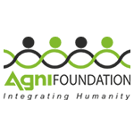

More than 90 percent of natural disaster-related deaths occur in developing countries, where poverty and lack of resources exacerbate the suffering. We work in many of these countries, preparing for disasters before they happen, and responding quickly when they do.
OUR IMPACT
2300
Families across Chennai has been rescued
We have distributed over 39 lakhs rupees worth of clothes and served over 12 lakhs food and water packets which have all been donated by the citizens of Chennai. We have been blessed with transportation resources of 7 buses, 4 trucks, 11 cars a couple of boats to reach relief supplies to the affected areas past week.
OUR IMPACT
250
Passionate volunteers of our organization has been widely appreciated by the media and the public
We have initiated our rescue and relief operations once again in the severely affected areas. 450 Foundations volunteers have been working tirelessly day and night to help those who are severly affected. We are not only providing food but also places to stay across chennai.
OUR IMPACT
250
INR 61,00,000 worth supplies that were donated entirely by the generous and kind hearted samatarians from all over the country has been distributed to affected areas
Socially inclined corporates like Tata Trust, IL&FS, Hexaware, Zomato, Big basket among several others have expressed interests to support us.Media houses in chennai such as Suryan FM, Big FM, Radio 1 and Chennai Live have partnered with us and are relaying information regarding our efforts.
OUR HELP
How quickly does World Vision respond to a disaster, and what is your immediate response?
DAY WISE SUPPORT